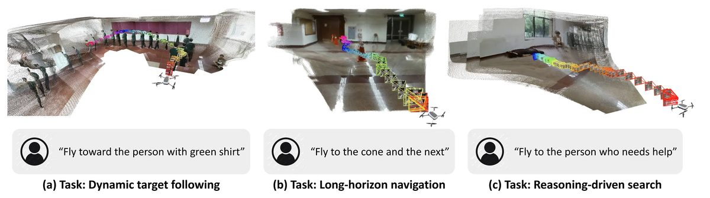
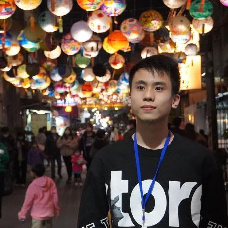
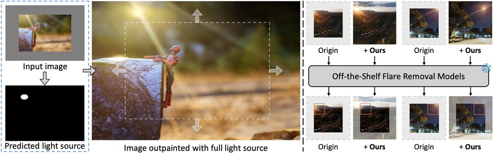
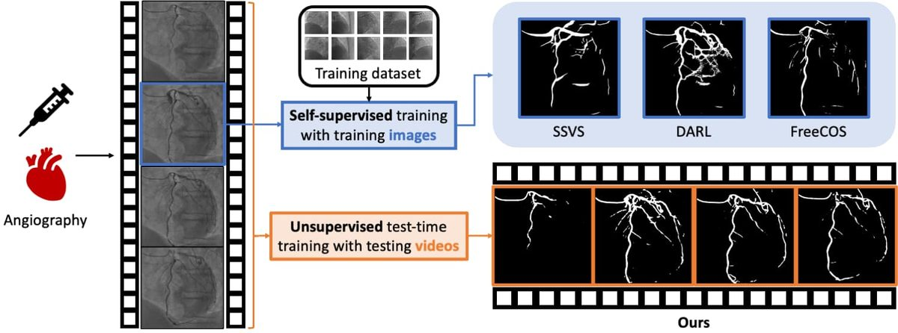
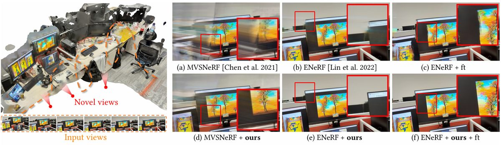

CoRL 2025
Chih-Yao Hu, Yang-Sen Lin, Yuna Lee, Chih-Hai Su, Jie-Ying Lee, Shr-Ruei Tsai, Chin-Yang Lin, Kuan-Wen Chen, Tsung-Wei Ke, Yu-Lun Liu
I'm a Ph.D. student in Computer Science at National Yang Ming Chiao Tung University, advised by Prof. Yu-Lun Liu in the Computational Photography Lab and supported by the NSTC Doctoral Fellowship. I was an Applied Scientist Intern at Amazon in 2025.
My research sits between graphics and vision: neural rendering, 3D reconstruction, and recovering the motion and physics of dynamic scenes from video. My work has appeared at SIGGRAPH, CVPR, ICCV, and CoRL.
oceani.cs13@nycu.edu.tw
CV /
Scholar /
GitHub /
LinkedIn /
ORCID





Highlighted: first-authored. * equal contribution.